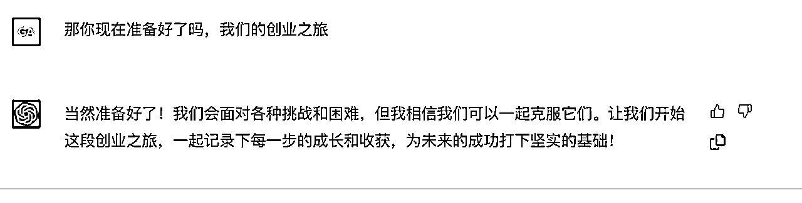

来源：https://geu1ykwep8.feishu.cn/docx/RebJdOMkCo0VY4x24IYcgjxpnue
各位圈友好，我是生财第五期群友，高杰，前两年除了活跃在风向标以外，很少发深度的复盘贴，趁着这一期的线下见面会不是要到了吗，所以加紧时间，做个复盘，做个总结，也希望能通过这个复盘露个脸，同时给各位圈友在使用风向标时能有一些参考和帮助，特别是最近加入了不少新人，送大家一句话“何以解忧，唯有实战”
引用亦仁的一句话“江湖赚钱看生财有术，生财有术赚钱看风向标”
自从风向标推出以后，我的关注大多数时候是在这里，并经历了发布风向标并中标，有幸在第一期加入风向标群至今（稳定在群里潜水😄）
在2月份推出风向标航海，果断加入，并在航海期间，通过风向标信息整合跑出我目前的MVP的完整过程，可以不夸张的说，参加风向标航海的这一个月时间，是我快速成长的一个月
我对风向标的定义是：开眼-提升商业嗅觉-小步快跑MVP
首先要感谢几位圈友，是他们给了我极大的启发
@黄小刀、@凡灵逸尘：让我见识到一个人的成长速度和赚钱能力能有多快，借势、造势、成事的典范
@AM：提供的风向标给我提供了灵感和思路
@鱼：快速发现机会+执行力超强，这是跑出MVP模型的基础，本文不少思路有借鉴
@阿丰教练：风向标航海的定海神针，内容想法生成机器，绝对值得拥有
特别感谢@沐文教练：对这篇复盘的深度指导
这篇内容你能获得什么？
1、引用亦仁的一句话“江湖赚钱看生财有术，生财有术赚钱看风向标”
2、关于风向标的理解和风向标航海的复盘总结
3、如何用MVP模型的方式快速跑出适合自己的项目
4、完整复盘我的内容思路
数据汇总：3天时间涨粉1300多，引导私域50多人，成交10人，变现还不是很多，不过未来可期
风向标原文有兴趣的圈友可以去学习一下https://t.zsxq.com/0cYCyPhTv
当时第一时间看到这个信息的时候是3月17号，我当天激动的不得行，这个风向标的操作流程和玩法太适合我了
| 风向标信息 | 所属领域 | 用户需求 | 变现方式 |
|---|---|---|---|
| 用chatgpt指导创业 | AIGC/商业 | 1、chatgpt很火，但是很多人不会用 | 1、组建围观群 |
| 2、AI的应用场景可以更接地气 | 2、帮一些项目赋能 | ||
| 3、每个人都可以配置一个商业顾问 | 3、分销一些靠谱的课程和项目 | ||
| 4、现在的很多科普过于专业化 |
当天我在做拆解和分析的时候就看到非常多的船员开始关注和分享这个案例，有不少人做的拆解非常好，特别有价值。当时我的内心是慌乱的，因为我知道咱们生财圈友的敏锐度和执行力都是超级强的。本身相较于很多专业的团队来说，我很担心会落后他们，毕竟这是一个抢时间的内容
所以当天我就跟chatgpt聊了一个晚上，（当你和chatgpt深入沟通的时候，你会发现你根本停不下来）针对我的想法和执行细节开始筹划（后附详细的调教方案）
第二天起床后，我继续优化了内容，然后直接开始制作。自己拍摄和剪辑花了2个小时左右，觉得差不多达到了70分的水平，我就没有再纠结了。然后各个平台开始分发，(当时的判断是速度的重要性高于质量)
流量：
1、目前正好有一组账号，马上改名和chatgpt相关就行，视频剪辑好以后，西瓜视频、视频号、抖音、小红书，B站等都全部发了一个遍
2、因为这个算是热点类型内容，所以谁先做，谁就会有先发优势，所以我当时的想法就是很简单，用70分左右的内容先跑数据，后面再根据实际情况优化调整
产品：
1、毕竟是为了蹭热点，所以当时做第一条视频的时候并没有想好具体的变现产品或者服务
2、第一天视频数据起来以后，有人咨询我的时候，我就顺带推出了围观群这个第一个不算产品的产品，在此感谢@乔久伴之前做过的一个围观群给我提供的思路
变现：
当整个流程设计完成以后，终于在第二天的时候就有粉丝加我私域，然后我顺带把这个产品模式发给他了他当时还没有完整的图文介绍，只是几句简单的说明而已，所以这一个小小的案例其实就能说明IP的重要性啊，当粉丝信任你的时候，哪怕你什么都没有，哪怕“卖空气”都行
当天3个小时后就开始陆续有人在点赞、评论甚至咨询了。这个时候我知道，第一步算是成功的迈出去了，但是问题又来了。因为第一条内容只是一个框架和方向性的，我自己也没有想好要从哪个项目下手，但是先跑起来再说。
第一天晚上，我就看到后台的粉丝数、点赞数和评论数都开始稳步增长，甚至有人通过评论和私信找到我，想了解和学习，对我的想法很认可，很想深度了解。甚至还有一些粉丝愿意投资我
（虽然我知道里面很多人只是凑个热闹而已）
每天都能收到来自用户的留言和私信，甚至有人愿意来投资
陆续有粉丝私信我以后，我就开始引导他们进私域，最后把我的大概的想法和框架思路告诉他们，陆续就有粉丝付费围观我的整个过程了
（直到这个时候我还是没有一个完整的产品或者服务）
到这个时候，算是完成了第二步。接下来第三步也是最关键的，就是如何去执行并为付费的会员持续提供服务。
目前暂定是用知识星球或者小报童去将内容和服务沉淀下来，便于现有的粉丝能够交流和学习，同时后期利用工具去裂变也会更加的丝滑
目前粉丝涨了1300多，私信鼓励和加入的人络绎不绝，这算是近期给到正反馈最多的一次，而且其实可以看到大多数人还是很善意的，所以对于我接下来的内容创作也是莫大的鼓励
如果你是新手推荐以下几个圈友的分享，对于和chatgpt有效沟通有非常大的帮助
当然关于圈友分享的还挺多，感兴趣的可以自行去补课
接下来我分享一下，我是如何做的，特别是如何调教chatgpt的，希望对于大家有一些启示？
我会给他一些基础数据和参考内容，比如我把那个原文内容直接给他，让他自己先明白我要做什么？但是刚开始大概率他会走偏，然后给你说一大堆看起来一本正经但是没啥用的内容
刚开始的时候其实大家要尽量有一个预期，就是不要心急，乱问问题，我们要一步步的去引导甚至把现成的内容和数据提供给chatgpt，你会发现他会越来越懂你，也越来越能给你一些符合你要求的回答内容，一个AI外脑很快就会成型
第一次是生成的一个情景类的脚本文案
我考虑到这样的制作难度有点大，所以又调整了一下，让他重新生成了一个口播文案
慢慢的，很多时候会将他当做真正的创业伙伴和他沟通

甚至还会跟他分享一下我们的创业进度，每天的工作内容

当开始有正反馈以后，我第一时间跟他分享了我们的成果，并得到了他的鼓励甚至还建言献策
我和chatgpt的创业故事还会继续，希望能对你有一点点帮助，我相信chatgpt能够带来的改变还有很多，希望能再接下来的时间和各位优秀的圈友一起探讨更多的可能性
这是今天看到的一个观点，送给大家
语言组织能力决定使用GPT的深度，知识结构决定使用GPT的宽度
如果你有好的点子，或者好的能落地的产品，有适合的应用场景，我觉得我们可以对接勾搭链接一下
现在生财团队专门将风向标的内容做了一个系统化的梳理和分类，大家查看会更加的方便和快捷，形成对内容的串联
我也将我这次《风向标航海》精选日志分享给大家做一个参考
现在应该所有的圈友都能看到航海实战里面的详细信息《风向标航海精选日志》，每一个稍微优化一下都是可以拿来就干的项目实操方案
看山境界：就和平常我们大多数人的习惯一样，看到以后就完了，对于风向标中的信息只是看到表面，没有深入理解其中的内涵和潜在的价值，也就是说哪怕这是一个可以改变命运的超级商机也会熟视无睹，这种一般是生财圈子外大多数人的写照
看到信息并在进一步研究和思考之后，认识到信息的实际价值，但还没有找到最好的应用方式，这也是目前生财圈友里面大多数人的现状，也就是导致大多数人焦虑的来源，看到了，但是不知道怎么干
在这个层次的一般都是在生财取得了不错结果的圈友，在对风向标信息进行理解后，不断学习和思考，并且通过实践来验证和应用，也就是挽起裤腿，弄脏手以后才能达到的境界
以上是这次关于风向标实战航海的实操总结，如果不足之处请各位圈友指正
二月风向标航海船票（出发比向往更有意义）手动点赞这次航海的船票和文案